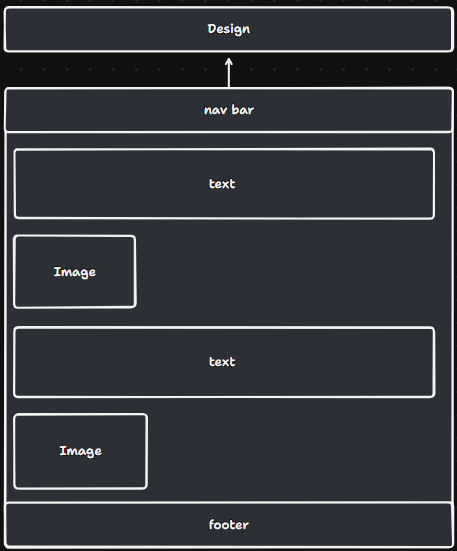

Reflections on the Internet, Information Overload, and Digital Models
Readings: The Library of Babel, by Jorge Luis Borges (1941); A revealing look at the dot-com bubble of 2000 — and how it shapes our lives today , by Brian McCullough;Flash And Its History On The Web
Readings and experience with setting up GitHub and publishing to Pages.
My experience with GitHub is always a tumultuous experience that starts off well. A process that is quick and painless to setup but problematic to update. I found that publishing my empty website shocking easily. In a few steps I have created and shared a path to my website with the world. I found the reading I had completed of
Jorge Luis Borgess “The tower of babel” to become too relatable too quickly. In this paper Borgess poses a situation in which everything that can be written is written and hence all truth and falsehood is placed in a jumbled labyrinth. The internet that may be considered the sum of human knowledge is a network in which anyone can add information to. Including an empty and useless website that may add to the confusion and inaccessibility of important and useful information. I found that a simple activity would be dissolving useful information that will lead to the ever-growing issue of oversaturation of information, until any information added is so infinitesimal small that it will not be able to have any impact to the network of knowledge. Could this lead to the internet being a useless or impractical tool in which attempting to find anything of substance near impossible?
The second set of readings focused on the flash and the bubble pop. I found that both readings had very similar story beats. They began with a new idea or new way to use technology. They both grew at an unsustainable rate due to the overevaluation of product/software, where they eventually became redundant and collapsed. With the dot com bubble, it grew due to investors pouring money into many startups. I find that the rave of GAI to be a comparable problem in recent times. Open ai, once the undisputed leader in the GAI space had been experiencing massive losses from operational costs alone. The company investments were still insanely high. This came to a massive crash when deep seeks ai was released which highlighted the overvaluation of the OpenAI’s software.
Cool things on the internet
I have been looking at the emergence of mathematical models that are used to simulate systems that have simple rules. Things like “Conway's Game of Life” and “Langton’s Ant”. The basics of the former’s simulation is there are a grid of blocks, a block can either be alive or dead. An alive block will die if there are less than 3 neighbours and be born if it has 3 or more neighbours. I found that simple pattern creation created through the mathematical simulation can create a calming and artistic feeling. I’ve found myself getting lost in attempting to create new patterns for myself have some satisfying patterns or equilibrium/sustainable states. Its interesting to find the advancements that some people have created including someone who created a clock using the system. Its hard if not impossible to pinpoint the exact reason for the creation of these types of simulations. However, the concepts explore mathematical curiosity, computational theory, and the study of self-organization in complex systems. These could be the reasons for the conception of these simulations.
My goals for the course
I want to really delve deep into the coding intricacy of html, css and javascripts. However, my main goal is to focus on understanding what makes a good UI. I found that I always struggle to make simple and user-friendly UI when making games and hence want to focus on theories and practices to male Ui easily digestible, to enhance usability and engagement
Website Structure, Design Concepts, and Interaction Reflections
File Structure
The file structure will be laid out where the root file will be the main folder which houses all other folders. It will contain folders index, blog, design, profile, portfolio (all folders just mentioned will have folders with code specific for them), scripts, images, styles. This simple layout will allow for easy access to all folders and ease traversal between the pages. The images and styles folders may need to be modifies so that there is a dedicated folder for each sub folder (eg an images and styles folder in the Index folder) just for speed and efficiency reasons however that will have to be tested further along the line.
Root(DIGA3008A)
Index
Index specific code
Blog
Blog specific code
Design
Design specific code
Profile
Profile specific code
Portfolio
Portfolio specific code
Scripts
Images
Styles
My URL will simply be the username of my GitHub followed by the path to the page based on the hierarchy listed above. For example, the Blog page will be ali-r-glitch.github.io/DIGA3008A/Blogs. This is to keep the hierarchy digestible and keep traversal as simple as possible.
Wireframes and ideas. There are a few ideas that I want to see come to life.
Ideas 1: simple
A simple and straightforward website with simple code.
Idea 2: Images
Using static or animated images that the user can’t interact with. I would like to use images related to me as a digital arts engineer. For example I would like to use a game controller for the homepage where each button would represent a page on the website.
Idea 3: maps
Im inspired by the websites of Immersive Gardens[1]. A 3D map like website in which the user can explore and move around in. The user can hover over a piece of land which will highlight it. If clicked the camera user will be moved to that area.
Reflection on the world wide web
I find the word interaction difficult in itself. My understanding of it is a predictable or non-random reaction to user input that may change the context or content of the text. My struggle in understanding the definition is what level of cognitive effort is required to be considered user input. Based on context and the user personally, something could be interactive. A hypothetical person who has never used technology would find no computer, mouse interaction or website interactive. The subjectivity of a concept that I thought was originally simple has changed my perception of the world wide web. When designing the Ui for the website I think I might fail to grapple with when to use links, previews and how to create a flow of the website so that the website is predictable yet interesting to view. The balance of knowing what is coming but interestingly presented might be difficult to achieve.
Reflection on the reading “You want a revolution?”
In the reading I found the most interesting point made was what hypertext would make obsolete. In the text it states that books would not become obsolete, but post literacy would be obsolete. I understand post literacy as the people losing interest in using and engaging with traditional forms of reading and writing. This poses that the implementation of the non linear “storytelling” ability of hypertext would revitalise reading and writing in a new interactive manner. I find this to be true in my experience as I struggle to enjoy reading, however it hypertext makes gathering of information easier and quicker due to the non linearity as I may quickly go to more information on a term I unsure of or skip ahead of needless information that I am informed about. This does create a medium in which I enjoy reading.
References
[1] Gardens, I. (n.d.). Taillet. Chartogne. https://chartogne-taillet.com/en
[2] Moulthrop. (2003). You Say You Want a Revolution?
Building My Website Framework and Planning User Experience
This week I focused on building the bones of my website. I focused on folder structure, traversal between pages, the functionality of jump links and implementation of images and videos. I focused on the actual html “code” this week. I found it quite different from any other languages I have used, it felt like describing what I wanted to do instead of coding (writing lines of instructions). The learning curve was not steep due to the simplistic tags and functionality that I started with. For the future of my website, it seems that my issues will mainly in the actual design and not the code to pull it off. I felt this way as I spent a disproportionate amount of time on simple text layout.
I expect that the users of my website will be possible employers or colleagues. I wish to use this website as a portfolio and thus the people using my websites will be intending to learn what I have done and what I can do. I will attempt to achieve this by showcasing projects I have previously done. With this in mind, the experience I wish for the users to have must be accomplished with a website that us professional, intelligently mapped, clean and polished. My design will be focused on creating a…
Mapping
The pages my portfolio will contain is a home, design, blog, profile and game dev pages. Each page will have a sticky navigation bar. I want the user to have the ability to freely access any page at any time. The home page will have minimal information but will give a brief overview of the website. I will have an interactive image that will either display an image with the words digital arts or engineering based on where the user is hovering the mouse. The image can either take the user to game dev or design based on if they click on digital arts or engineering. The blog page will have a navigation bar on the left which will have every blogs name. the user will be able to jump to any blog they select. The game dev will have descriptions of the games I want to showcase similar to my itch page. The design page will have recent electronic or software projects I wish to showcase. The profile page will house all my basic skills, interests and all of my contact information and details using a combination of images to showcase the different platforms with links to them. This will be a page dedicated to making a page to explore and sell myself.
My folder structured will compose of the folders for scripts, images, styles and each page. In each page’s folders there will be folders for scripts, this will be for pages specific functionality. This structure will allow me for easy filing and expansion if necessary.
Looking back at the wireframes I originally created, it's clear that I was quite confused about good design practices and what I actually liked about other websites. My initial design was impractical because it didn’t even include a navigation bar . I relied on single links scattered vertically across the page to connect to other sections. Without setting a consistent structure for my website, it became difficult to navigate, and as a result, it lacked functionality.
I wasn’t sure how to guide users through my site, so I added awkward columns at the bottom of the visible page as a poor attempt at navigation. At that stage, I didn’t yet understand the purpose of footers or how to use other visual cues that could look much cleaner and more intentional. For example, I could have used simple borders around the top and sides of the page to visually suggest scrolling, or even a transparent arrow that subtly fades downward as a gentle hint. I’ve since realized that most users naturally expect a page to be scrollable unless it's clearly shown otherwise, rather than assuming it's static.
Another issue with my wireframes was that they included elements that weren’t actually HTML, because I wasn’t sure what should be handled with CSS, JavaScript, or HTML. This was simply due to a lack of experience at the time.
The biggest struggle for Assignment 1 was figuring out the design and actually filling out the different pages with meaningful content. I found it difficult to plan out the structure of each page and decide what belonged where, especially since I wasn’t sure how to create a logical flow or what information was unnecessary.
I also found that working with images and navigation within a page was particularly intimidating. Trying to create a page that allowed users to find the information they were looking for while also keeping the content organized and not overwhelming was a huge challenge. Each page risked becoming overloaded with information. On top of that, making it possible to jump between different sections without cluttering the page with too many links was tough.
It was difficult to balance showing large amounts of information versus offering brief summaries or previews before diving into detail. In the end, I chose to cut a lot of information and instead included links at the top of each page that direct users to different parts of the content. I also made use of icons to visually represent and break up information in a way that makes the site easier to explore.
Design Section
This website was created as a portfolio to showcase my work and achievements so far. My design is focused on creating an intuitive and simple way to explore everything I’ve done. I want to strike a balance between being professional and relaxed, as the site should represent me personally while still appealing to those, I want to showcase it to.
2a. User Interface (UI):
The main elements of my UI design include:
A navigation bar that is always present and consistent across all pages.
Icons for coding languages I am proficient in, acting as visual cues for my technical skills.
A white background paired with pastel colours, giving a clean, minimal look that highlights content without overwhelming it.
Rounded corners used throughout to create a friendly and relaxed feel.
Standard components like a header and footer, contributing to a well-organized and easy-to-navigate layout.
Although I haven’t finalized the typography yet, I’m aiming for a clean, modern font that works well with the soft pastel theme and ensures good readability.
2b. User Experience (UX):
Since this is a portfolio, accessibility and ease of navigation are my top priorities:
Users should be able to browse smoothly, whether on desktop or mobile.
A sticky navigation bar allows quick access to different sections without having to scroll back up.
Clear contact options, making it easy for users to get in touch with me directly.
4. Reference Material and Inspirations
One of my main inspirations is Adham Dannaway's website.
What I like:
The clean and simple layout.
Effective use of space and minimalism, keeping things uncluttered.
The homepage image that cleverly shifts between programming-focused and creative-focused visuals — a great way to represent a dual skill set.
What I don’t like:
Some sections feel a bit too formal and robotic, which isn’t the vibe I’m going for. I want something more inviting and casual.
Although I haven’t chosen a final font yet, I’ve already put together a color palette that will define the site's visual style (attached in this document):
Primary Colours:
Deep Teal: #0F5257
Pastel Blue: #8DA9C4
Warm Red: #AA4465
Accent and Background Colours:
Soft Cream: #FAF0CA
Light Cream: #FAF8D4
These colours are meant to create a calm and approachable vibe, which is ideal for a portfolio that aims to be both professional and welcoming.
back to top
Colour palette I will use for the website design.
Wireframe layout for the homepage of the site. A simple layout that serves as just an Introduction.
Wireframe showing how the blogs section will be structured.

Wireframe for the design showcase page. This page focuses on how I designed the website.
Wireframe for the portfolio section, where I focus on what projects I have worked on.
Website Structure, Design Concepts, and Interaction Reflections
This website was created as a portfolio to showcase my work and achievements so far. My design is focused on creating an intuitive and simple way to explore everything I’ve done. I want to strike a balance between being professional and relaxed, as the site should represent me personally while still appealing to those, I want to showcase it to.
Comparing those early wireframes with my current designs, I can see a significant improvement in how I approach both structure and user experience. My new wireframes are much more organized, featuring clearly defined sections and consistent layouts across pages. Each page now has a specific purpose and is properly titled, helping users know where they are and what to expect.
Goal Alignment
My goal has always been to create a portfolio that is both professional and reflective of my personal style, and I believe my current designs are much closer to achieving that balance.
Information Structure - Content Mapping
The pages I now include are:
Homepage: Introduction to who I am, with clear text about me and navigation to other sections.
Blogs Page: A space to share blog posts, with placeholders for text and blog titles
Design Page: Dedicated to showcasing my design work, including space for text descriptions and images.
Projects Page: A gallery-style page to highlight key projects, including descriptions and supporting visuals.
Profile Page: Focused on my background, achievements, and personal statement, with additional text and images.
User Flow - Screens, Behaviour, and Decisions
Each page connects logically to the others, and I now have a navigation bar that is consistent across all pages — something I had completely missed in my early wireframes. The navigation bar makes it easy for users to move between pages without frustration.
In redesigning the wireframes, I focused heavily on improving the user experience (UX). I considered how users would move through the site, ensuring that each page is easy to access, and that information is presented in a way that doesn't overwhelm the reader.
List and Explanation of Selected Interface Elements
A navigation bar that is always present and consistent across all pages.
Icons for coding languages I am proficient in, acting as visual cues for my technical skills.
Rounded corners used throughout to create a friendly and relaxed feel.
Standard components like a header and footer, contributing to a well-organized and easy-to-navigate layout.
Clear contact options, making it easy for users to get in touch with me directly.
Sticky navigation bar allows quick access to different sections without having to scroll back up.
Style Process Documentation
Although I haven’t finalized the typography yet, I’m aiming for a clean, modern font that works well with the soft pastel theme and ensures good readability.
Although I haven’t chosen a final font yet, I’ve already put together a colour palette that will define the site's visual style:
Primary Colours: Deep Teal: #0F5257, Pastel Blue: #8DA9C4, Warm Red: #AA4465
Accent and Background Colours: Soft Cream: #FAF0CA, Light Cream: #FAF8D4
Reference Material
One of my main inspirations is Adham Dannaway's website.
What I like:
The clean and simple layout.
Effective use of space and minimalism, keeping things uncluttered.
The homepage image that cleverly shifts between programming-focused and creative-focused visuals — a great way to represent a dual skill set.
What I don’t like:
Some sections feel a bit too formal and robotic, which isn’t the vibe I’m going for. I want something more inviting and casual.
Website Structure, Design Concepts, and Interaction Reflections
I want a clear and functional website that displays both my engineering and digital arts
feats. For the visual elements I will blend soft shapes and hard fonts to make a stark
contrast. I will focus on using rounded buttons, and icons with more sharp geometric
fonts. I am still undecided on the fonts I will use; however, I am currently looking at
Tektur and Arimo fonts for the body (where the weighting for the fonts is 0) and Barlow
Condensed as the heading. My colour palette will be grey/black backgrounds, with
bright coloured sub colours and white/bright coloured text. The images below is my
main inspiration for colour palette. Im looking at this type of colour pallete as I wish to
achieve a strong use of bright colours against a dark background to emphasise
readability whilst also creating bright and colourful imagery. This will hopefully create a
popping website with minimal different colours and simple elements. The simplicity of
this approach makes it easier to maintain a cohesive and polished look.
fragpunk 1
fragpunk 2.
Website Structure, Design Concepts, and Interaction Reflections
The Johannesburg Zoo
https://www.jhbcityparksandzoo.com/services-facilities/zoo/aboutLinks to an external site.
The jhbcityparksandzoo
Why
It’s a well-known public space, and I want to see how they present information. They have implemented a lot of practices which I plan to avoid. Discussing this might help flesh out my ideas better.
Pros
It extensively presents information.
It has stark contrast of black font against white background.
The simple text style allows for easy reading.
It has uniform layout across pages.
Cons
This is a massive website that links to way too many pages. It becomes too overwhelming to traverse.
There are too many navigation bars
The pages are not unique and lack identity.
Screenshot 2025-03-29 215004.png
Parktown boys
https://parktownboys.com/Links to an external site.
Parktown
Why
All boys high schools normally have a cult like following, thus the brand and profile of the school is vital. I want to explore how they present themselves.
Pros
They use colour palettes I want to use. Bright font against dark background
They use UI elements I want to use. Ie. sticky nav bar, reactive buttons, footers and round icons instead of text.
Cons
This website has links to what feel like should be simple pages but are completely different websites, and so is difficult to go between certain pages